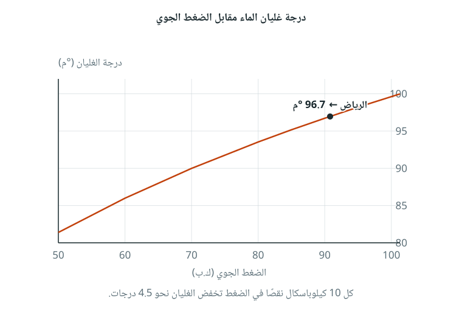

عند أي درجة يغلي الماء في الرياض؟
غيّر الضغط الجوي وتابع درجة الغليان: لاحظ كم تنقص عند 90 كيلوباسكال.
القيمة الافتراضية 90.8 ك.ب = الضغط الجوي التقريبي للرياض على ارتفاع 950 مترًا. محاكاة تعليمية لا قياس فيزيائي حقيقي: الأرقام تُحسب من النموذج لحظيًا.
افتراضات النموذج والمصدر
log₁₀P(mmHg) = 8.07131 − 1730.63/(233.426 + T)
ماء نقي بلا أملاح
ضغط بخار الماء من معادلة أنطوان (تبسيط فوق 100 °م)
لا تبادل حراري مع الوعاء
Water — saturated vapour pressure and latent heat — Engineering ToolBox
الغليان ليس «وصول الماء إلى مئة درجة»، بل تساوي ضغط البخار المتولّد داخل الفقاعات مع الضغط المسلّط على سطح الماء. عند ضغط أقل يحتاج بخارًا أقل ضغطًا، أي حرارة أقل.
في الرياض على ارتفاع نحو 950 مترًا يقع الضغط الجوي قرب 90.8 كيلوباسكال، فيغلي الماء عند 96.7 °م. على جبل إيفرست (نحو 33 ك.ب) يغلي عند 71 °م، ولهذا لا يطهو الطعام جيدًا هناك بلا قدور ضغط.
كيف تعمل الظاهرة؟
جزيئات السائل في حركة دائمة، وبعضها يملك طاقة كافية للهروب من السطح. ضغط البخار المتولّد يزيد مع الحرارة. الغليان يبدأ حين يصبح ضغط البخار مساويًا للضغط الخارجي، فتتكوّن فقاعة بخار داخل السائل تدفعه للصعود بدل أن ينهار.
العلاقة بالأرقام
المعادلة: log₁₀P(mmHg) = 8.07131 − 1730.63/(233.426 + T). عند الضغط الجوي 90.80 ك.ب، يعطي الحساب: درجة الغليان = 97.0 °م؛ النقص عن 100 °م = 3.0 درجة. حالة «ضغط منخفض» (الضغط الجوي 60.00 ك.ب): درجة الغليان = 86.0 °م؛ النقص عن 100 °م = 14.0 درجة. حالة «قرب مستوى البحر» (الضغط الجوي 101.30 ك.ب): درجة الغليان = 100.0 °م؛ النقص عن 100 °م = 0.0 درجة. هذه أمثلة مولدة من دالة الحساب نفسها؛ وليست قياسات فعلية أو مواصفات لجهاز تجاري.
مفاهيم متقاربة
يُخلط بين الغليان والتبخّر: التبخّر يحدث عند أي حرارة من السطح، والغليان تكوّن فقاعات داخل الكتلة. ويُخلط بين الحرارة والطاقة الكامنة: الماء عند 100 °م لا يغلي إن كان الضغط أعلى، والسائل يغلي تحت 100 °م في وعاء مفرّغ.
حدود التطبيق
معادلة أنطوان تقريبية داخل نطاق حرارة محدود لكل مادة، وتنحرف قرب النقطة الحرجة (374 °م للماء) حيث يختفي الفرق بين السائل والغاز. كما تفشل مع المحاليل: إضافة الملح ترفع درجة الغليان بحسب التركيز.

| الكمية | القيمة | المصدر |
|---|---|---|
| درجة الغليان — الحالة الافتراضية | 97.0 °م | [1] |
| النقص عن 100 °م — الحالة الافتراضية | 3.0 درجة | [1] |
المصادر
- 1 Water — saturated vapour pressure and latent heat — Engineering ToolBox. www.engineeringtoolbox.com/water-properties-d_1573.html · اطُّلع عليه 2026-11-16
- 2 Vapor pressure formulation (Antoine equation) — NIST. www.nist.gov/pml · اطُّلع عليه 2026-11-16
راجعه: مراجعة آلية — بوابة الديوان (فحص بنيوي وأرقام) 2026-11-16 · 2026-11-16 · آخر تحديث 2026-11-20
رجوع إلى المعمل